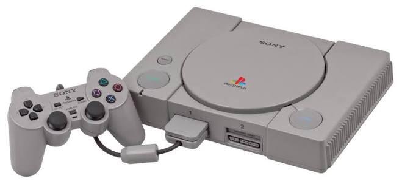
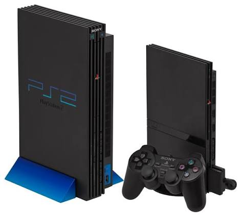

A Geração de todos os Consoles da Sony
Playstation 1:

O PlayStation 1 (PS1) foi um console de videogame desenvolvido pela Sony e lançado no Japão em 1994, chegando a outros países nos anos seguintes. Ele se tornou um dos consoles mais populares da história e ajudou a transformar a Sony em uma das principais empresas do mercado de videogames.
Playstation 2:

O PlayStation 2 (PS2) foi um console desenvolvido pela Sony e lançado no Japão em 2000. Ele foi o sucessor do PlayStation 1 e se tornou um dos consoles de maior sucesso da história, Com seus gráficos em 3D, grande biblioteca de jogos e recursos multimídia
Playstation 3:
O PlayStation 3 (PS3) foi um console desenvolvido pela Sony e lançado em 2006. Ele foi o sucessor do PlayStation 2 e trouxe avanços importantes em gráficos, processamento e recursos online. O PS3 utilizava discos Blu-ray para os jogos, oferecendo muito mais espaço de armazenamento do que os DVDs. Também possuía acesso à internet por meio da PlayStation Network